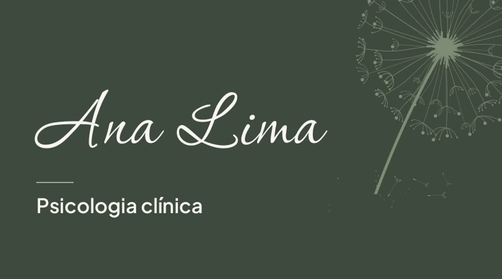
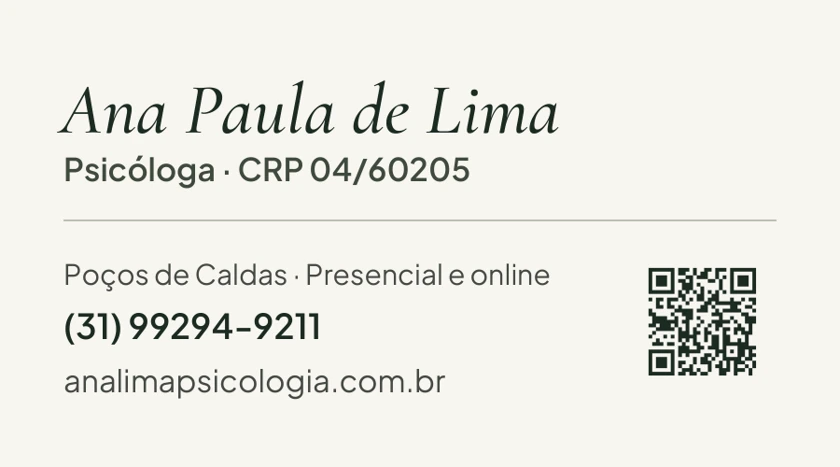
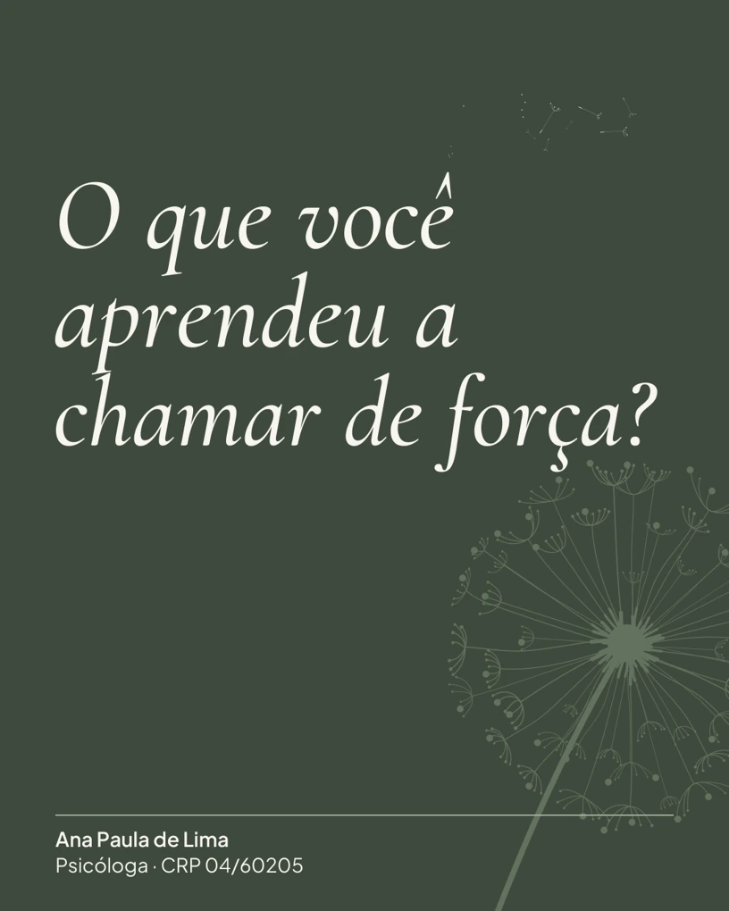
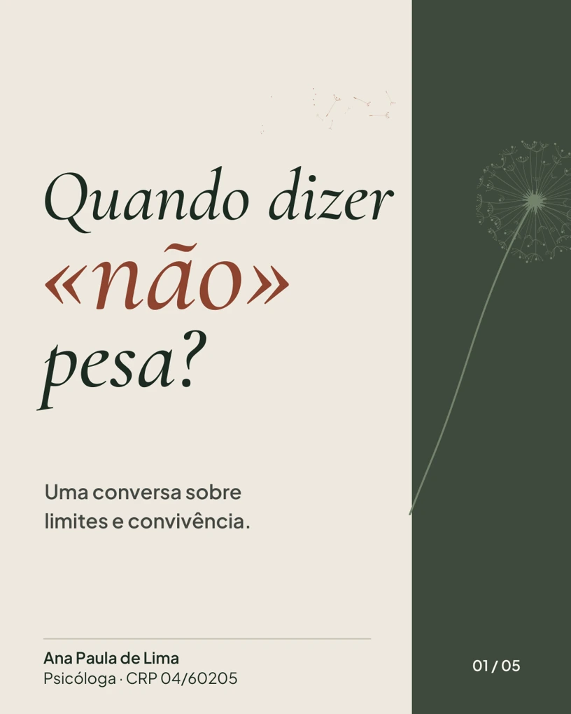
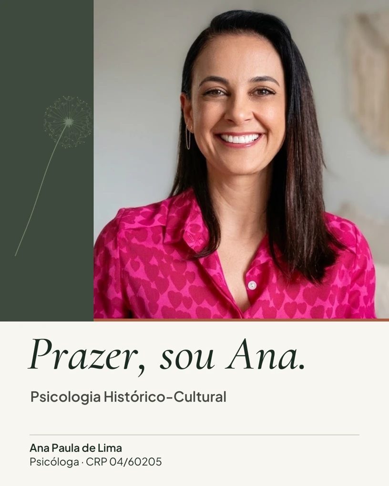
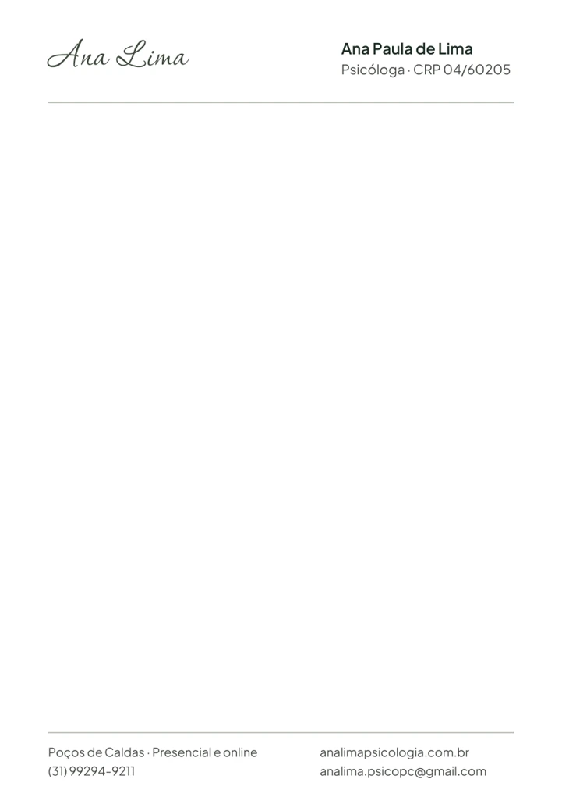

Cartão de visita
90 × 50 mm. PDF frente e verso com sangria de 3 mm.

A identidade de Ana Lima, da flor do logotipo às peças que a psicóloga pode editar e usar no dia a dia.
Três composições para o feed. Use a reflexão para abrir uma conversa, o carrossel para desenvolver um tema e o retrato para apresentar a Ana e seu trabalho.

Uma pergunta em até três linhas.

Capa

Foto real, nome e área de atuação.
Sete artes em 1080 × 1350 px. Os PNGs para publicação estão no kit completo.
O cartão leva a flor até a borda. Na papelaria, a assinatura aparece em escala menor para dar espaço ao texto do documento.


90 × 50 mm. PDF frente e verso com sangria de 3 mm.

A4, 210 × 297 mm. Área central livre para o texto.
O Canva recebe os modelos editáveis. O guia de IA organiza a redação nos campos de cada peça.
Nos posts, exporte em PNG. Para a gráfica, use o PDF de impressão do cartão.
Cole o guia nas instruções do projeto ou envie junto com o tema. Peça os campos do modelo escolhido e revise o texto antes de publicar.
# Guia de redação · Ana Lima Psicologia Redija em português brasileiro para Ana Paula de Lima, psicóloga, CRP 04/60205. Sua abordagem é a Psicologia Histórico-Cultural. Atendimento presencial em Poços de Caldas e online. ## Briefing Peça ou use o tema, o formato escolhido e o objetivo da publicação. Quando faltar uma informação clínica, institucional ou bibliográfica, sinalize a pendência para revisão da Ana. Use apenas situações hipotéticas ou gerais e preserve a privacidade de pacientes. ## Voz Escreva como numa conversa calma e adulta. Comece por uma situação reconhecível, faça perguntas específicas e considere relações, condições de vida e história. Prefira «em que situações isso acontece?» a rótulos sobre quem lê. Evite frases motivacionais genéricas, diagnósticos, garantias, depoimentos de pacientes, sensacionalismo e citações sem fonte. Qualquer afirmação clínica nova pede fonte primária e revisão da Ana. ## Saída para o Canva Entregue o texto separado por campo. Respeite a quantidade de linhas indicada. Conte os caracteres com espaços e trate os limites como ponto de partida. Confira a quebra real no modelo. - Reflexão. Três linhas de título, até 18 caracteres por linha. Exemplo de ritmo. «O que você / aprendeu a / chamar de força?» - Carrossel, lâmina 1. Três linhas de título, até 14 caracteres na primeira, 8 na segunda e 10 na terceira. Apoio em duas linhas de até 26 caracteres cada. - Carrossel, lâmina 2. Título em uma linha de até 16 caracteres. Situação cotidiana em duas linhas de até 32 caracteres. Fecho curto em duas linhas de até 17 caracteres. - Carrossel, lâmina 3. Título em duas linhas de até 20 caracteres. Desenvolvimento em três linhas de até 34 caracteres. - Carrossel, lâmina 4. Título em uma linha de até 20 caracteres. Três perguntas. Cada pergunta pode ter até duas linhas de 28 caracteres. - Carrossel, lâmina 5. Título em três linhas de até 17 caracteres. Fecho em uma linha de até 35 caracteres. - Retrato. Título em uma linha de até 17 caracteres. Apoio em uma linha de até 34 caracteres. Use foto real aprovada pela Ana. Preserve os campos fixos de nome e identificação profissional. Entregue também uma legenda curta, um texto alternativo para cada arte e uma nota de revisão quando houver fatos ou fontes a confirmar. A legenda pode terminar com uma pergunta relacionada ao tema. A revisão final é da Ana. Referência profissional para revisão. https://site.cfp.org.br/wp-content/uploads/2022/06/SEI_CFP-0612475-Nota-Tecnica.pdf
O oliva assina a marca, o linho abre espaço para leitura e o terracota pontua palavras, linhas e detalhes. Clique numa cor para copiar o código.
O que nos atravessa.
Cormorant Garamond · títulos
Uma voz que pergunta, escuta e abre espaço para pensar.
Plus Jakarta Sans · texto corrido e identificação
Corinthia · assinatura original em vetor